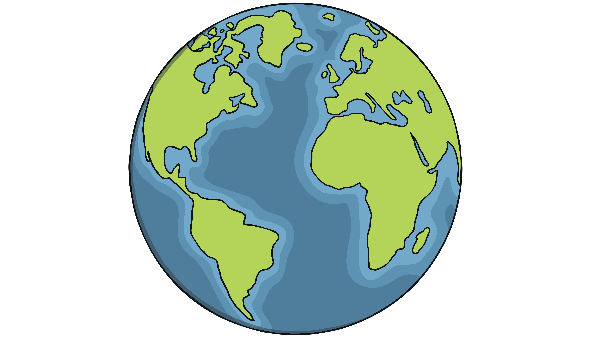

Dicas Ambientais

Evite o desperdício de água
Pensar no consumo é uma dica muito importante para quem se preocupa com o meio ambiente. Assim, em relação a água é possível fazer a sua parte com algumas atitudes simples como: instalar descargas que gastam menos e não deixar a torneira aberta desnecessariamente. O Colégio Stella Maris, por exemplo, adotou medidas para evitar o desperdício. Nas escolas foram instaladas presilhas em todas as torneiras e caixas d’água acopladas aos vasos sanitários. Já tivemos, inclusive, um aluno protagonizando uma campanha da Sanepar.
Economize Energia
Desligue aparelhos eletrônicos quando não estiverem em uso e prefira lâmpadas de LED. A economia de energia ajuda a reduzir a demanda por recursos naturais.
Plante Árvores
Plantar árvores é uma excelente maneira de contribuir para o meio ambiente. As árvores ajudam a purificar o ar, conservam a água e proporcionam habitats para a vida selvagem.
Reduza o consumo de plástico
O plástico leva mais de 400 anos para se decompor. Além disso, todos os anos cerca de 8 milhões de toneladas de plástico são descartadas nos oceanos do nosso planeta, causando a morte de mais de 100 mil animais marinhos. Você pode evitá-lo recusando descartáveis no delivery, utilizando sacolas retornáveis e levando uma garrafa reutilizável.
Faça a reciclagem corretamente
O descarte incorreto de materiais prejudica o meio ambiente e atrapalha a reciclagem. Por isso, a Família Folhas está de volta! A iniciativa da Prefeitura de Curitiba resgata os personagens clássicos para mostrar a importância do destino correto de itens que não são biodegradáveis. Assim como outras ações com foco em sustentabilidade.